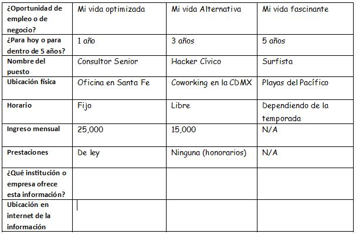
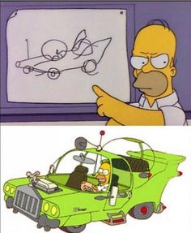
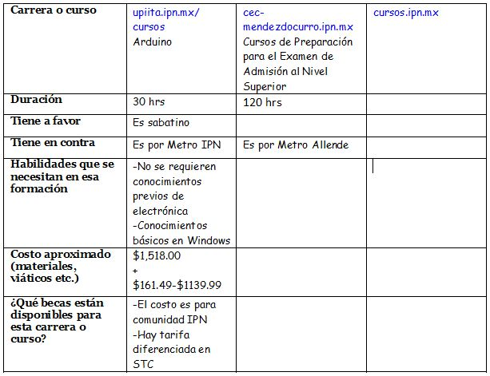

Designing Your Life
Formado Futuro Virtual
¿Estás viviendo la vida que quieres?
La Encuesta Nacional sobre Satisfacción Subjetiva con la Vida y la Sociedad dice que
- 82.3 % Sí
- 17.5 % No
¿Qué no necesitamos?
Una clase de orientación vocacional, un libro de superación personal ni una plática motivacional.
Creencias disfuncionales
Son conceptos erróneos que interfieren en el diseño de nuestro plan de carrera.
¿Cuál es tu pasión?
Dime tu pasión y te diré qué hacer.
Ya deberías saber a donde ir
y como llegar ahí
y si no sabes ya vas tarde.
¿Eres la mejor versión de ti?
¿Te estás conformando?
¿Para hacer eso estudias?
Tengan cuidado del conocimiento convencional porque usualmente está equivocado. - Mary O’Hara-Devereaux
¿Qué sí necesitamos?
Ideas y herramientas dentro de un marco de referencia para la orientación de nuestra vida y carrera.
1. Conecta los puntos
Dale siginificado y valor a tu trabajo.
Las dimensiones del ser humano
El equilibrio entre amor, juego, trabajo y salud.
| Actual | Revisado | |
|---|---|---|
| Amor | 3 |
|
| Juego | 2 |
|
| Trabajo | 4 |
|
| Salud | 1 |
Si pudieras hacer algún pequeño cambio incremental, ¿cuál sería?
| Actual | Revisado | |
|---|---|---|
| Amor | 3 | |
| Juego | 2 | |
| Trabajo | 4 | 3 |
| Salud | 1 | 2 |
¿Qué beneficio le traería a tu vida este cambio?
¿Que acción inmediata podrías realizar para aplicarlo?
Unir lo que hacemos con lo que sabemos y con lo que creemos.
Como programador quiero resolver problemas por medio de la tecnología para aplicar la innovación como una palanca del desarrollo social.
El "futuro" no se puede predecir porque el "futuro" no existe.
-Jim Dator
2. Replantea tus problemas
Un cambio de enfoque puede generar oportunidades.
La mayoría de las personas están estancadas y no saben cómo llegaron ahí.
Casi cualquier problema se puede replantear.
Si el problema no es accionable entonces es una circunstancia.
Las circunstancias no se pueden cambiar, se aceptan.
Pregúntate si hay otra manera de mirar la situación
Busca el lado positivo a lo que te ocurre.
Considera un problema, por ejemplo "¿Qué hago para estudiar medicina?".
Estás asumiendo una carrera universitara.
Cambia la pregunta a "Cómo puedo ayudar a las personas a cuidar su salud?".
Puedes encontrar una gama más abierta de soluciones sin desechar la orginal.
Si algo grandioso va a ocurrir, tiene que empezar en algún lado. - Mary O’Hara-Devereaux
3. ¿Cuántas vidas estás viviendo?
Identifica a tus otros yos en el multiverso.
Consideraremos 3 escenarios (paralelos)
- Escenario de disciplina (optimizado)
- Escenario de colapso (transformado)
- Escenario de crecimiento (innovador)
Ponle un título a cada escenario.
Mi vida optimizada
¿Cómo seguiría tu vida si sigues haciendo lo mismo y todo sale perfecto?
Dibuja las señales que te llevarían a un futuro deseable.
Mi vida transformada
¿Qué harías si la opción anterior dejara de existir, si tu trabajo lo hicieran los robots o desapareciera tu carrera?
¿Hacía dónde trasladarías tus conocimientos?
Mi vida innovadora
¿Qué harías si no importara el dinero o el qué dirán?
Cualquier idea útil sobre el futuro debe parecer ridícula.
Anexo: Organizando mis opciones para trabajar.
 El futuro ya está aquí pero no está bien distribuido.
-William Gibson
4. ¡Asumir es peligroso!
Haz prototipos
Prototipo
Es barato de construir, fácil de implementar y ayuda al aprendizaje.
Nos ayuda a saber qué podría salir mal.
Los prototipos te ayudan a desmentir lo que asumes.
No prototipar nos puede salir muy caro.
Colaboración radical
Involucra a otros con tus ideas.
Busca personas que estén viviendo la vida que quieres.
Hazles preguntas interesantes.
Expón tus suposiciones.
Exploración vivencial
Toma cursos de los temas que te interesan.
Haz voluntariado.
Únete a comunidades.
Asiste a eventos gratuitos.
Oferta de cursos y talleres
Anexo: Organizando mis opciones para estudiar
 ¿Cómo reducir el impacto económico de prototipar?
www.ipn.mx/correo-electronico.html
www.dcyc.ipn.mx/computo/software-dcyc.html
www.metrotarifadiferenciada.cdmx.gob.mx/preregistro/Default.aspx
El riesgo nunca se elimina solo se controla.
-Dave Evans
5. Toma buenas decisiones y defiéndelas
Reune las opciones, aterrízalas, decide y agoniza.
El proceso de toma de decisiones
Reune las opciones, aterrízalas, decide, suelta y fluye.
Evita la sobrecarga de opciones.
Confía en tu instinto.
¿Qué pasa cuando hay demasiados sabores de helado?
¿Terminas pidiendo lo mismo de siempre?
Aprende a tomar buenas decisiones y a defenderlas
-Col. Chris Hadfield
¿Qué pasa si no hacemos prospectiva?
Esclavitud del presente
Vulnerabilidad ante el desastre
Alguien más decide por ti
"Por algo pasan las cosas"
Conclusiones
Nunca es demasiado tarde para empezar.
La mejor versión de ti excluye a las demás versiones geniales de ti.
Las cirunstancias son como el clima.
Fallar rápido, fallar barato, fallar para seguir adelante.
Ningún plan de carrera va a sobrevivir el primer contacto con la realidad.
El camino a la felicidad no está en obtener lo que quieres sino en querer lo que tienes.-Dan Gilbert
Descarga las notas del taller